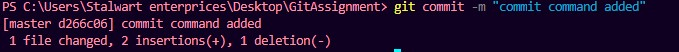
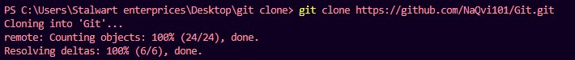

Tutorial For Learning Git Commands
How to link the local repository with remote repository
- Run git init command : First we have to declare the local repositry as a git repository.

- Now you have to make a new repository on your GitHub account with defualt settings.

- Copy the link of newly created repository.
- Run command git remote add orgin repositorylink: After running this your local directory is connected with the remote repository.
How to push files on the remote repository
- Run git status command: To see tracked and untracked files in the repository
- Run git add . or git add filenameThe git add command is used to place the modified version of the working directory in the staging area (Files that are going to be a part of the next commit).
- Run git commit -m "message" command : This command is run after git add and it can be seen as a checkpoint. After executing the git commit, your staging area will be empty.

- Run git push --set-upstream origin master command : This will upload your files to the git remote repository
How to clone a remote repository
- Create a folder where you want to clone the remote repository.
- Open that folder in vs code.
- Open terminal of vs code.
- Run git clone repository link command : This will clone the repository content in that folder.

- git pull command :The git pull command is one of the commands that are involved in the "syncing" process. These commands work on the remote branches that are configured with the git remote command. The commits are uploaded with git push and download with git fetch and git pull.